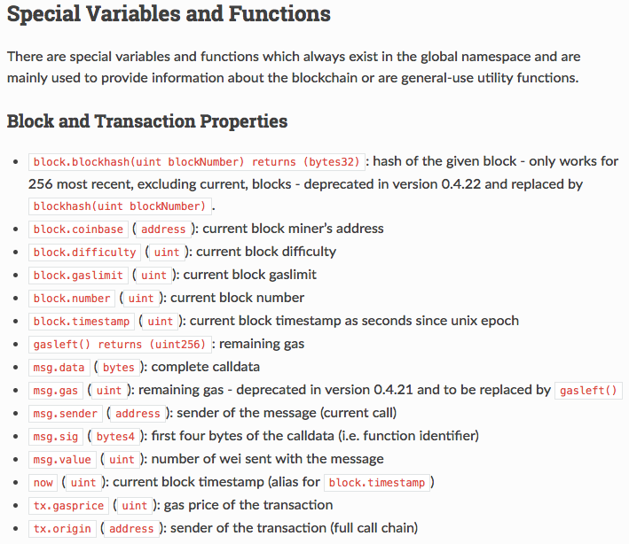

Can we get transaction information recorded in the past block using Solidity in the Smart contract?
I am studying blockchain with Ethereum, and I want to use past transaction data in the Smart contract using Solidity. If I use Web3.js module in the program written in javascript, I can get these data easily. But I can't get these data in the Smart contract using Solidity.
Reference of Solidity says that we can get current block number, blockhash, etc., by using "block.number" and "block.blockhash(uint blockNumber)" functions, but doesn't mention getting transaction data. (http://solidity.readthedocs.io/en/latest/units-and-global- variables.html#special-variables-and-functions)

please help me.
Answer
The answer is simple. Unfortunately, you simply can’t access old transaction
or block data onchain from Solidity. At most, you can access hashes of last
256 blocks (see blockhash in documentation )
Alternatively, as a workaround you could consider using Oraclize. Oraclize represents way to read offchain data onchain, so you could try to read transaction data from Etherscan web API. The way Oraclize works is that :
- You request to Oraclize smart contract what data you want to fetch from internet (some URL)
- Oraclize offchain servers then detect your on-chain request
- The look up the data you wanted (they'll make some http request to the URL you provided)
- Once they get response, they will send transaction to your contract (calling specific callback method) containing data you requested
With such approach however, you are relying that:
- EtherScan is up and running
- Oraclize is up un running.
If you only care about transaction data related to your smart contracts, another way would be to store that transaction data onchain. Maybe we could gave you some more suggestions if you tell us more about what specific problem are you solving.